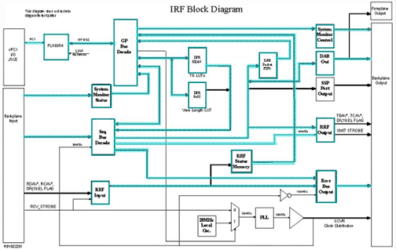
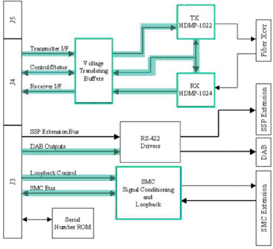

Proprietary to General Electric
Direction 5500113, Rev# 3
Discovery MR750 3.0T Service Methods
Module Version 1.0, Version Date 4/26/07
Proprietary to General Electric |
Diagnostics >> MGD Chassis >> MGD Board level Diagnostics
The Interface & Remote Functions Board Level Diagnostic (BLD) performs the tests listed below. In addition to testing the IRF board, the IRF I/O board functionality is also verified.
IRF board
IRF I/O board
Minimum Configuration:
APS Board
IRF Board
Illustration 1: IRF Block Diagram

Illustration 2: IRF I/O Block Diagram

Patterns used to validate the memory are selectable and are listed below. The items highlighted in green in the following block diagrams show what is been tested.
Registers Initial State Verification
Registers Write Verification
Tx Attenuation LUT Verification
View Length LUT Verification
Scratch Pad Memory Verification
Rx\Tx Status Memory Verification
Bypass FIFO Verification
DAB Packet FIFO Verification
Command Queue Verification
PCI Over Temperature Tests
PCI DMA Tests
Memory Pattern:
0 MINIMUM or Power Up = 0's, F's, and an Address Test (Incrementing values)
1 Short = 0's, F's, A's, 5's and an address test.
2 Medium = 0's, F's, A's, 5's, walking one's, and an address test.
3 Long = 0's, F's, A's, 5's, walking one's, walking 0's, and an address test.
Output values are judged pass or fail. In the event of failure, the details of the failure can be found in the GE System Log.
Although, in the case of errors you can click the 1st Error number to see the nature of the error, it is recommended that you view the GE System Log to view all the errors that were recorded.
Short vs. Long Tests: The short test performs a walking ones and walking zeroes pattern whereas the long test will perform a walking ones, walking zeroes, 0xaaaa, 0x5555, and possibly other patterns. As a result, selecting the long test will generally provide a longer and more exhaustive test. If the problem is highly intermittent then it may be desirable to run a long test.
Click [Calculate Time] to get an estimate of the time it will take to run the selected diagnostics.
| NOTE: | Other than Test Iterations, the Test Options settings should not be changed from their default settings unless instructed to do so by a GE Healthcare engineer. There are very few circumstances when these settings ever need to be changed. |
IRF Help Page:/csd/mr_csd/serviceDesktop/docs/cclass/irf_board/irf_board.htm
IRF I/O Help Page:/csd/mr_csd/serviceDesktop/docs/cclass/irf_io_board/irf_io_board.htm